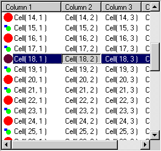

You can download the full grid list control implementation at the bottom of
the page. Since it uses the newest common control features, you will need
to download the common
control redistributable in order to run the sample. In order to build
the sample, you will also
need the Platform
SDK build environment. There is also documentation
on the new common control features there as well. All you need from
the build environment are the CommCtrl.h and the ComCtl32.lib files. Make
these available to
your VC++ build environment. I did this by backing up my old files
(just in case) and copying these two files into my include and lib directories
respectively.
In this explanation, I call out certain functions from the grid
list control sample which pertain to this article.
// Attributes public: // The current subitem or column number which is order based. int m_CurSubItem;
BOOL CGridListCtrl::PrepareControl()
{
ASSERT( m_hWnd );
DWORD dwStyle = GetWindowLong(m_hWnd, GWL_STYLE);
dwStyle &= ~(LVS_TYPEMASK);
dwStyle &= ~(LVS_EDITLABELS);
// Make sure we have report view.
SetWindowLong( m_hWnd, GWL_STYLE, dwStyle | LVS_REPORT );
// Enable the full row selection and the drag drop of headers.
DWORD styles = LVS_EX_FULLROWSELECT | LVS_EX_HEADERDRAGDROP ;
// Use macro since this is new and not in MFC.
ListView_SetExtendedListViewStyleEx(m_hWnd, styles, styles );
return TRUE;
}
For more information on the cell navigation with the mouse see the article, "Grid List Control." For keyboard navigation, the user can use the right and left arrow to move the cell cursor. We can do this in the PreTranslateMessage override method. We only handle the messages if the grid list control has the focus. The pretranslated messages may also be for the subitem while it is being edited, and we don't want to interfere with its operation.
MakeColumnVisible is called to make sure that the focused cell is fully exposed by scrolling as necessary. Its implementation follows. The Header_OrderToIndex macro is called to translate the order based m_CurSubItem to an index. The up and down arrows are already handled sufficiently by the list control itself. This also includes the nondestructive edit activation via F2.
The value of -1 for m_CurSubItem indicates that there is no current subitem focus.
BOOL CGridListCtrl::PreTranslateMessage(MSG* pMsg)
{
if(pMsg->message == WM_KEYDOWN)
{
// Handle the keystrokes for the left and right keys
// to move the cell selection left and right.
// Handle F2 to commence edit mode from the keyboard.
// Only handle these if the grid control has the focus.
// (Messages also come through here for the edit control
// and we don't want them.
if( this == GetFocus() )
{
switch( pMsg->wParam )
{
case VK_LEFT:
{
// Decrement the order number.
m_CurSubItem--;
if( m_CurSubItem < -1 )
{
// This indicates that the whole row is selected and F2 means nothing.
m_CurSubItem = -1;
}
else
{
CHeaderCtrl* pHeader = (CHeaderCtrl*)GetDlgItem(0);
// Make the column visible.
// We have to take into account that the header
// may be reordered.
MakeColumnVisible( Header_OrderToIndex( pHeader->m_hWnd, m_CurSubItem ) );
// Invalidate the item.
int iItem = GetNextItem( -1, LVNI_FOCUSED );
if( iItem != -1 )
{
CRect rcBounds;
GetItemRect(iItem, rcBounds, LVIR_BOUNDS);
InvalidateRect( &rcBounds );
}
}
}
return TRUE;
case VK_RIGHT:
{
// Increment the order number.
m_CurSubItem++;
CHeaderCtrl* pHeader = (CHeaderCtrl*) GetDlgItem(0);
int nColumnCount = pHeader->GetItemCount();
// Don't go beyond the last column.
if( m_CurSubItem > nColumnCount -1 )
{
m_CurSubItem = nColumnCount-1;
}
else
{
// We have to take into account that the header
// may be reordered.
MakeColumnVisible( Header_OrderToIndex( pHeader->m_hWnd, m_CurSubItem ) );
int iItem = GetNextItem( -1, LVNI_FOCUSED );
// Invalidate the item.
if( iItem != -1 )
{
CRect rcBounds;
GetItemRect(iItem, rcBounds, LVIR_BOUNDS);
InvalidateRect( &rcBounds );
}
}
}
return TRUE;
case VK_F2: // Enter nondestructive edit mode.
{
int iItem = GetNextItem( -1, LVNI_FOCUSED );
if( m_CurSubItem != -1 && iItem != -1 )
{
// Send Notification to parent of ListView ctrl
CHeaderCtrl* pHeader = (CHeaderCtrl*)GetDlgItem(0);
CString str;
// We have to take into account that the header
// may be reordered.
str = GetItemText( iItem, Header_OrderToIndex( pHeader->m_hWnd, m_CurSubItem ) );
LV_DISPINFO dispinfo;
dispinfo.hdr.hwndFrom = m_hWnd;
dispinfo.hdr.idFrom = GetDlgCtrlID();
dispinfo.hdr.code = LVN_BEGINLABELEDIT;
dispinfo.item.mask = LVIF_TEXT;
dispinfo.item.iItem = iItem;
// We have to take into account that the header
// may be reordered.
dispinfo.item.iSubItem = Header_OrderToIndex( pHeader->m_hWnd, m_CurSubItem );
dispinfo.item.pszText = (LPTSTR)((LPCTSTR)str);
dispinfo.item.cchTextMax = str.GetLength();
// Send message to the parent that we are ready to edit.
GetParent()->SendMessage( WM_NOTIFY, GetDlgCtrlID(),
(LPARAM)&dispinfo );
}
}
break;
default:
break;
}
}
}
return CListCtrl::PreTranslateMessage(pMsg);
}
void CGridListCtrl::MakeColumnVisible(int nCol)
{
if( nCol < 0 )
return;
// Get the order array to total the column offset.
CHeaderCtrl* pHeader = (CHeaderCtrl*)GetDlgItem(0);
int colcount = pHeader->GetItemCount();
ASSERT( nCol < colcount );
int *orderarray = new int[ colcount ];
Header_GetOrderArray( pHeader->m_hWnd, colcount, orderarray );
// Get the column offset
int offset = 0;
for( int i = 0; orderarray[i] != nCol; i++ )
offset += GetColumnWidth( orderarray[i] );
int colwidth = GetColumnWidth( nCol );
delete[] orderarray;
CRect rect;
GetItemRect( 0, &rect, LVIR_BOUNDS );
// Now scroll if we need to expose the column
CRect rcClient;
GetClientRect( &rcClient );
if( offset + rect.left < 0 || offset + colwidth + rect.left > rcClient.right )
{
CSize size;
size.cx = offset + rect.left;
size.cy = 0;
Scroll( size );
rect.left -= size.cx;
}
}
BEGIN_MESSAGE_MAP(CGridListCtrl, CListCtrl)
//{{AFX_MSG_MAP(CGridListCtrl)
ON_WM_LBUTTONDOWN()
ON_WM_HSCROLL()
ON_WM_VSCROLL()
//}}AFX_MSG_MAP
ON_NOTIFY_REFLECT(NM_CUSTOMDRAW, OnCustomDraw)
END_MESSAGE_MAP()
Further you will also need to add the member function declaration as follows also outside
the Class Wizard fences:
protected:
//{{AFX_MSG(CGridListCtrl)
afx_msg void OnLButtonDown(UINT nFlags, CPoint point);
afx_msg void OnHScroll(UINT nSBCode, UINT nPos, CScrollBar* pScrollBar);
afx_msg void OnVScroll(UINT nSBCode, UINT nPos, CScrollBar* pScrollBar);
//}}AFX_MSG
afx_msg void OnCustomDraw(NMHDR* pNMHDR, LRESULT* pResult);
Now the fun begins. We all like to draw, right?
The new custom control custom draw is a staged process. The same message is sent at different drawing stages of the control. If you tell it that the control can handle the rest of the stages, it will not send any more custom drawing messages for that drawing session. The control will always send the NM_CUSTOMDRAW message just before commencing a drawing session. If you want to handle the drawing of the control (any of it), the return value from this message must indicate it. In this implementation, we only want to override the drawing of the subitem which has the focus. The rest of the drawing can be done by the control.
There are four stages outlined as follows:
void CGridListCtrl::OnCustomDraw(NMHDR* pNMHDR, LRESULT* pResult)
{
// This function is called by the control in different
// stages during the control drawing process.
NMLVCUSTOMDRAW *pCD = (NMLVCUSTOMDRAW*)pNMHDR;
// By default set the return value to do the default behavior.
*pResult = 0;
switch( pCD->nmcd.dwDrawStage )
{
case CDDS_PREPAINT: // First stage (for the whole control)
// Tell the control we want to receive drawing messages
// for drawing items.
*pResult = CDRF_NOTIFYITEMDRAW;
// The next stage is handled in the default:
break;
default: // Stage two handled here. (called for each item)
if( !(pCD->nmcd.uItemState & CDIS_FOCUS) )
{
// If this item does not have focus, let the
// control draw the whole item.
*pResult = CDRF_DODEFAULT;
}
else
{
// If this item has focus, tell the control we want
// to handle subitem drawing.
*pResult = CDRF_NOTIFYSUBITEMDRAW;
}
break;
case CDDS_ITEMPREPAINT | CDDS_SUBITEM: // Stage three (called for each subitem of the focused item)
{
// We don't want to draw anything here, but we need to respond
// of DODEFAULT will be the next stage.
// Tell the control we want to handle drawing after the subitem
// is drawn.
*pResult = CDRF_NOTIFYSUBITEMDRAW | CDRF_NOTIFYPOSTPAINT;
}
break;
case CDDS_ITEMPOSTPAINT | CDDS_SUBITEM: // Stage four (called for each subitem of the focused item)
{
// We do the drawing here (well maybe).
// This is actually after the control has done its drawing
// on the subitem. Since drawing a cell is near instantaneous
// the user won't notice.
int subitem = pCD->iSubItem;
// Only do our own drawing if this subitem has focus at the item level.
if( (pCD->nmcd.uItemState & CDIS_FOCUS) )
{
// If this subitem is the subitem with the current focus,
// draw it. Otherwise let the control draw it.
CHeaderCtrl* pHeader = (CHeaderCtrl*)GetDlgItem(0);
// We have to take into account the possibility that the
// columns may be reordered.
if( subitem == Header_OrderToIndex( pHeader->m_hWnd, m_CurSubItem ) )
{
// POSTERASE
CDC* pDC = CDC::FromHandle(pCD->nmcd.hdc);
// Calculate the offset of the text from the right and left of the cell.
int offset = pDC->GetTextExtent(_T(" "), 1 ).cx*2;
// The rect for the cell gives correct left and right values.
CRect rect = pCD->nmcd.rc;
CRect bounds;
GetItemRect( pCD->nmcd.dwItemSpec, &bounds, LVIR_BOUNDS );
// Get the top and bottom from the item itself.
rect.top = bounds.top;
rect.bottom = bounds.bottom;
// Adjust rectangle for horizontal scroll and first column label
{
if( subitem == 0 )
{
CRect lrect;
GetItemRect( pCD->nmcd.dwItemSpec, &lrect, LVIR_LABEL );
rect.left = lrect.left;
rect.right = lrect.right;
}
else
{
rect.right += bounds.left;
rect.left += bounds.left;
}
}
// Clear the background with button face color
pDC->FillRect(rect, &CBrush(::GetSysColor(COLOR_3DFACE)));
// PREPAINT
CString str;
str = GetItemText( pCD->nmcd.dwItemSpec, pCD->iSubItem );
// Deflate the rect by the horizontal offset.
rect.DeflateRect( offset, 0 );
// You could also make this column alignment sensitive here.
pDC->DrawText( str, rect,
DT_SINGLELINE|DT_NOPREFIX|DT_LEFT|DT_VCENTER|DT_END_ELLIPSIS);
// POSTPAINT
// Draw rounded edge
rect.InflateRect( offset, 0 );
pDC->Draw3dRect( &rect, ::GetSysColor(COLOR_3DSHADOW), ::GetSysColor(COLOR_3DFACE) );
rect.DeflateRect( 1, 1 );
pDC->Draw3dRect( &rect, ::GetSysColor(COLOR_3DDKSHADOW), ::GetSysColor(COLOR_3DHILIGHT) );
// Tell the control that we handled the drawing for this subitem.
*pResult = CDRF_SKIPDEFAULT;
}
}
}
break;
}
}